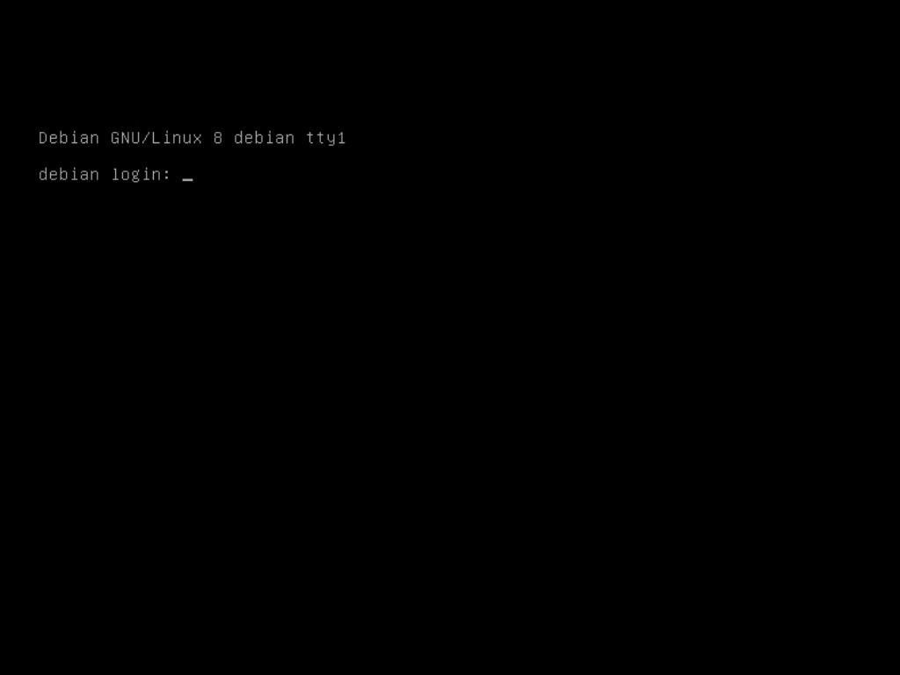
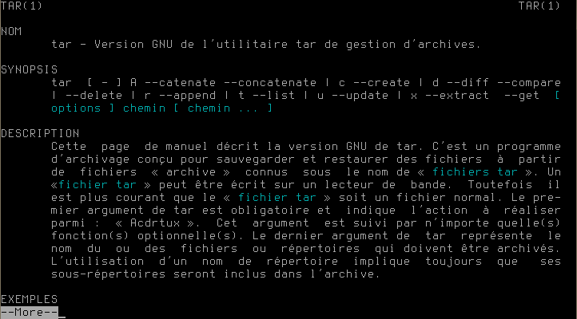

Après quelques secondes, vous obtenez un prompt qui vous demande un nom d'utilisateur.

Si vous avez laissez le mot de passe
rootvide lors de l’installation, ceci est déjà correctement configuré.
Il n’y a aucune raison de se connecter directement en tant que root, par
conséquent autant désactiver ce compte et passer par la commande sudo pour
exécuter les tâches d’administration.
Commencez par vous connecter avec le compte root.
Si ce n’est pas encore fait, installez sudo :
# apt-get install sudo
La configuration par défaut autorise les membres du groupe sudo à utiliser la
commande en saisissant leur mot de passe. Il nous suffit d’ajouter notre
utilisateur au groupe sudo :
# adduser sanpi sudo
Avant de nous déconnecter, nous allons vérifier que tout fonctionne
correctement. Appuyez sur les touches Ctrl+alt+F2, ceci aura pour effet de
basculer dans un second terminal (tty2) où vous pouvez vous connecter avec
votre compte utilisateur puis tester la commande sudo :
$ sudo -s
We trust you have received the usual lecture from the local System
Administrator. It usually boils down to these three things:
#1) Respect the privacy of others.
#2) Think before you type.
#3) With great power comes great responsibility.
[sudo] password for sanpi:
# exit
Pour fermer votre session, vous pouvez utiliser la commande
exitou simplement appuyez sur les touchesCtrl+D
Saisissez à nouveau votre mot de passe. Si tout se passe bien, il nous reste à
désactiver le compte root :
$ sudo passwd -l root
Pour commencer, nous devons mettre à jour le système :
$ sudo -s
# apt-get update
# apt-get upgrade
Sachant que cette tâches doit être effectuée régulièrement afin d'assurée la sécurité de votre serveur, nous verrons au chapitre mises à jour automatiques comment gérer ceci de façon automatique.
Comme la majeure partie des manipulations effectuées sur votre serveur se fera via la ligne de commande, il est nécessaire d'avoir quelques outils.
Voici rapide aperçu de ceux déjà installés :
nano : un éditeur de texte ;tar, gzip : respectivement un outils pour archiver et pour
compresser les fichiers, le format .tar.gz est souvent utilisé ;wget : vous permet de télécharger un fichier.Si vous souhaitez avoir de l'aide sur une commande, prenez le réflexe
d'utiliser la commande man suivie du nom du programme :
$ man tar
Vous obtiendrez la page de manuelle associée, ici à la commande tar,
comme le montre la figure 4-2, parfois en français mais dans
tout les cas claire et complète, bref généralement un bon point de départ
pour trouver réponses à vos questions.

Vous l'aurez remarqué, il n'est pas très aisé de naviguer dans la documentation
puisque nous pouvons uniquement passer à la page suivante en appuyant sur la
touche espace. Afin de pouvoir naviguer de façon plus naturelle, avec
les flèches du clavier, vous pouvez installer le programme less :
# apt-get install less
Nous venons de passer en revue une bonne partie des commandes qui vont seront utiles dans la suite de ce livre pour visualiser, éditer des fichiers et installer des programmes (pour plus d'information à ceux sujet, vous pouvez vous reportez à l'annexe gestion des paquest).